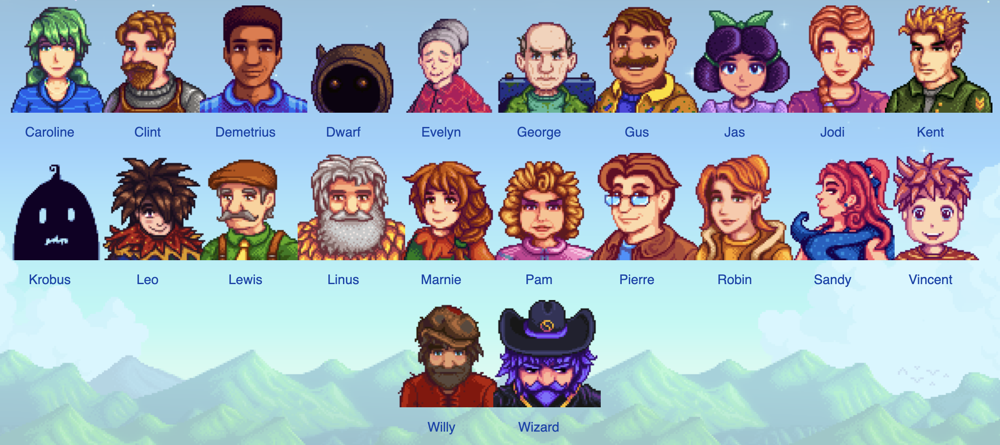

Marriage Candidates
There are 12 total bachelors and bachelorettes. Each one has different personalities and different events as you progress your relationships with them. The bachelors are Elliot, Shane, Sebastion, Sam, Harvey, and Alex. The Bachelorettes are Abigail, Emily, Haley, Leah, Maru, and Penny. When the game first launched there were only 10, but a later update added Shane and Emily. There's so many to pick but who will you choose?
Non-Marriage Candidates
There are 22 total non-marriage candidates. Each character is different and unique. There are a variety of characters from shop owners to a wizard, you don't know who you're gonna meet and befriend. Like the marriage candidates, you get special cutscenes and unlock new items the further you progess with them. It pushes you to want to max out your friendship levels and learn more about everyone. Who will you befriend first? Will it be the seed shop owner? The cave dwarf? The choice is yours.
A Few More Characters
- Gunther
- Marlon
- Gil
- Morris
- And a Few More